Sebenarnya pada bab yang lalu kita telah menggunakan Web Component, yaitu
gambar terjadwal dan sarana untuk menghasilkan animasi. Antara lain Picture
Scheduled, Marquee, Banner Ad Manager dan Hover Button. Pada bab 11 ini akan
dibahas beberapa Web Component yang disediakan oleh FrontPage XP. Dimulai
dengan Search yaitu sarana pencari.
1. Membuat sarana pencari
Sarana ini akan sangat membantu para pengunjung situs Anda kelak, terutama jika
informasi yang disediakan oleh situs Anda demikian banyak.
Fasilitas semacam ini sudah sangat lazim dijumpai, dan sangat populer karena
hampir semua pemakai internet memerlukannya, sarana ini bahkan merupakan asset
bisnis yang potensial di dunia bisnis internet. Contohnya Yahoo, Alta Vista dan
sebagainya.
1.1 Pembuatan sarana pencari pada Windows 98
Langkah pembuatan sarana pencari adalah:
1. Buatlah sebuah situs baru, misalnya Web11, yang terdiri dari sebuah halaman.
2. Bukalah halaman tersebut lalu tentukan lokasi pemasangan sarana pencari.
3. Aktifkan Insert _ Web Component. Muncul Insert Web Component.
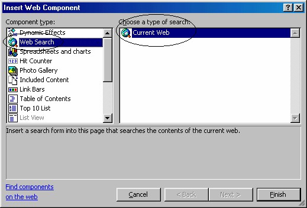
Gambar 11.1 Insert Web Component
4. Pada bidang kiri, klik Web Search, dan di bidang kanan, klik ganda Current
Web. Muncul kotak dialog Search Form Properties. Gambar 11.2.
5. Pada kotak isian Label for input tuliskan label pencarian, misalnya “Yang
dicari: ”.
6. Pada kotak isian Width in characters tentukan panjang karakter yang diijinkan.
Defaultnya 20, ini suadh cukup panjang.
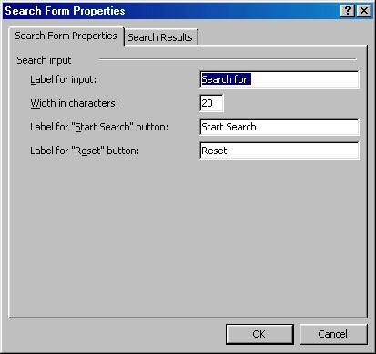
Gambar 11.2 Kotak dialog search Form Properties
7. Pada kotak isian Label for “Start Search” tuliskan label untuk tombol “Start
Search”. Misalnya “Mulai”.
8. Pada kotak isian Label for “Reset” isikan label tombol “Reset”. Misalnya tidak
kita ubah, yaitu tetap “Reset”.
9. Kemudian klik tab Search Results. Lihat Gambar 11.3.
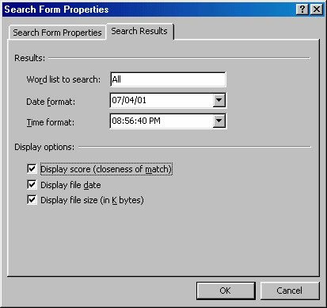
Gambar 11.3 Tab Search Result
10. Kotak isian Word list to search terpampang isian All. Hal ini berarti akan
mencari keseluruhan kata yang Anda tuliskan secara persis.
11. Kotak pilihan Date format, untuk menentukan format penulisan tanggal. Kotak
ini bisa digunakan apabila Anda mengaktifkan kotak cek Display file date.
12. Kotak pilihan Time format, untuk menentukan format penulisan waktu. Kotak
ini bisa digunakan apabila Anda mengaktifkan kotak cek Display file date.
13. Kotak cek Display score , untuk menampilkan angka mutu proses pencarian.
14. Kotak cek Display file date, untuk menampilkan tanggal daan waktu pencarian.
Jika Anda aktifkan pilihan ini maka kotak isian Date format dan Time format
akan aktif sehingga Anda bisa memilih format penulisan tanggal dan waktu.
15. Kotak cek Display file size , untuk menampilkan ukuran file dalam satuan K
Byte.
16. Klik OK. Hasilnya seperti Gambar 11.4.
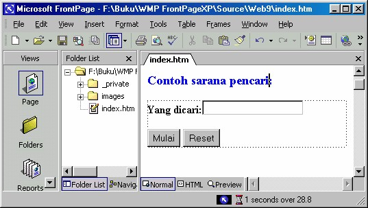
Gambar 11.4 Hasil pemasangan sarana pencari
1.2 Membuat sarana pencari pada Windows 2000
Pada Windows 2000, yang di dalamnya terdapat Frontpage 2000 Extensions Server,
maka sarana pencarian ini memiliki fitur yang lebih lengkap. Apalagi jika Anda
telah menginstal Sharepoint yang di dalamnya terdapat Frontpage 2002 Extensions
Server. Perbedaan itu terlihat nyata pada tab Search Results kotak dialog Search
Form Properties. Bandingkan antara Gambar 11.3 dengan Gambar 11.5.
Baiklah, langkah pembuatan sarana pencari pada Windows 2000 adalah:
1. Buatlah sebuah situs baru, misalnya Web11, yang terdiri dari sebuah halaman.
2. Bukalah halaman tersebut la lu tentukan lokasi pemasangan sarana pencari.
3. Aktifkan Insert _ Web Component. Muncul Insert Web Component.
4. Pada bidang kiri, klik Dynamic Effects. Pada bidang kanan, klik ganda Web
Search. Lalu klik Finish, muncul kotak dialog Search Form Properties.
5. Pada kotak isian Label for input tuliskan label pencarian, misalnya “Yang
dicari: ”.
6. Pada kotak isian Width in characters tentukan panjang karakter yang diijinkan.
Defaultnya 20, ini sudah cukup panjang.
7. Pada kotak isian Label for “Start Search” tuliskan label untuk tombol “Start
Search”. Misalnya “Mulai Cari”.
8. Pada kotak isian Label for “Reset” isikan label tombol “Reset”. Misalnya tidak
kita ubah, yaitu tetap “Reset”.
9. Kemudian klik tab Search Results. Lihat Gambar 11.5.
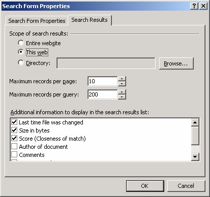
Gambar 11.5 Tab Search Result
10. Pada kelompok Scope of search results: terpampang tiga pilihan yang harus
Anda pilih:
• Entire website . Area pencarian meliputi seluruh situs web yang pada
komputer maupun jaringan di kantor Anda.
• This web. Area pencarian hanya pada situs web ini saja.
• Directory:. Area pencarian hanya pada folder tertentu saja yang ada di
dalam situs web ini. Yang mana? Tuliskan nama dan alamat web pada kotak
isian di sebelahnya. Kalau Anda lupa, klik saja tombol Browse, muncul
kotak dialog Current Web (Gambar 11.6) yang bisa Anda gunakan untuk
mencari folder tersebut. Setelah ditemukan, klik OK. Kembali ke kotak
dialog Search Form Properties.
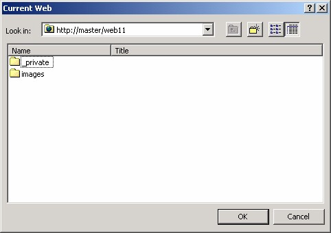
Gambar 11.6 Kotak dialog Current Web
11. Kotak isian Maximum records per page, untuk menentukan jumlah record
yang akan ditampilkan pada halaman. Pencarian bisa saja menemukan banyak
sekali halaman. Lalu Anda bisa menentukan jumlah halaman yang akan
ditampilkan. Tampilan berupa tabel dan satu baris disebut dengan satu record.
Anda bisa mengatur agar menampilkan sampai 1000 record. Selanjutnya, untuk
menampilkan isi halaman, klik salah satu record di dalam tabel yang Anda
inginkan.
12. Kotak isian Maximum records per query, untuk menentukan kapasitas
pencarian.
13. Kotak cek Last time file was changed, untuk menampilkan tanggal daan waktu
perubahan terakhir pada file.
14. Kotak cek Size in bytes, untuk menampilkan ukuran file dalam satuan Byte.
15. Kotak cek Score (Closeness of match), untuk menampilkan tingkat ketepatan
antara kata yang dicari dengan file hasil pencarian.
16. Kotak cek Author of doccument untuk menampilkan nama pembuat dokumen.
17. Kotak cek Cuments untuk menampilkan komentar yang ada.
18. Kotak cek Documents Subject untuk menampilkan topik isi dokumen.
19. Kotak cek Matches untuk menampilkan tingkat kesesuaian.
20. Klik OK. Hasilnya sama dengan yang dihasilkan oleh Windows 98, yaitu seperti
Gambar 11.4.
1.3 Mencoba pada browser
Setelah sarana pencari terpasang di halaman, selanjutnya Anda bisa mencobanya
pada browser.
Ada hal yang perlu Anda perhatikan, jika situs yang Anda buat adalah Disk based
web (tidak di dalam folder Inetpub\wwwroot) maka Anda harus mem-publish situs
web Anda lebih dulu.
Publish adalah proses pemasangan folder situs ke folder web yang ada di direktori
Inetpub\wwwroot. Langkah yang diperlukan adalah dengan mengaktifkan perintah
File _ Publish web, lalu mengisikan nama folder web tujuan (jika belum ada, Anda
bisa membuatnya saat itu juga). Untuk keterangan lebih detil tentang publish atau
publikasi ini, simaklah bab terakhir. Ada cara mempublish yang amat sederhana,
yaitu salinlah folder tersebut ke folder Inetpub\wwwroot.
Setelah dipublish, lalu jalankan browser dan bukalah alamat web tersebut.
Jika langkah di atas tidak Anda lakukan, misalnya Anda memilih untuk langsung
menampilkan situs dengan tombol Preview in browser tanpa mem-publish lebih
dulu, maka Anda akan mendapatkan halaman error seperti Gambar 11.7 berikut ini:
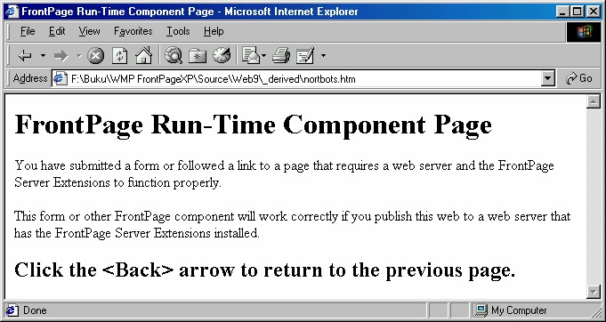
Gambar 11.7 Halaman error
Jadi, saya ulangi, setelah Anda publish dan Anda jalankan browser, tuliskan
alamatnya pada browser, misalnya http://master/web11 lalu tekan ENTER, maka
terbukalah situs tersebut.
Selanjutnya Anda bisa mencoba sarana pencari ini. Pada kotak isian Yang dicari:
tulislah kata atau kalimat yang akan Anda cari, misalnya nama file doa.htm, lalu
klik tombol Mulai. Sesaat kemudian FrontPage XP akan mulai mencari file tersebut.
Jika ditemukan, hasilnya akan seperti Gambar 11.8.
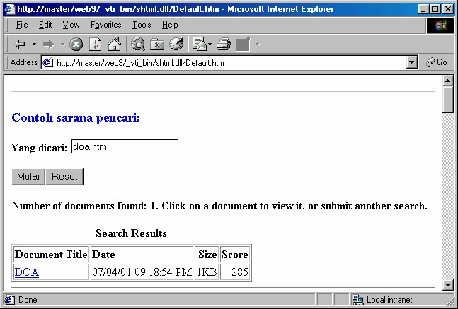
Gambar 11.8 Hasil pencarian file DOA
Kalau Anda klik nama halaman yang telah ditemukan tersebut, maka browser akan
membukanya.
Kalau Anda menggunakan Sharepoint (Windows 2000), hasilnya akan lebih
lengkap. Misalnya untuk pencarian home, seperti Gambar 11.9.
Perhatikan, di sana terdapat dua tombol yaitu Next 10 Matches dan Previous 10
Matches, kedua tombol tersebut berguna untuk menampilkan 10 record berikut dan
10 record sebelumnya.
Anda bisa menentukan jumlah record tersebut pada kotak isian Maximum records
per page , di tab Search Results kotak dialog Search Form Properties. Gambar
11.5. Untuk lebih jelasnya, buka ulang halaman sebelum ini yang menampilkan
gambar tersebut.
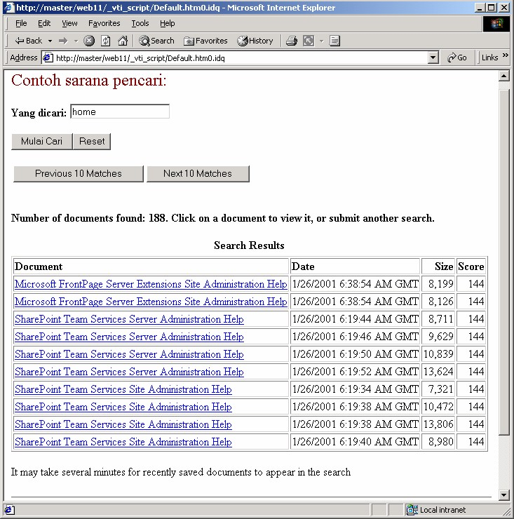
Gambar 11.9 Hasil pencarian home pada lingkungan Windows 2000
1.4 Mengedit sarana pencari
Untuk mengedit properti sarana pencari, Anda harus menggunakan kotak dialog,
dengan cara:
1. Pada halaman di FrontPage XP, klik kanan sarana pencari .
2. Klik perintah Search Form Properties, muncul kotak dialog Search Form
Properties.
3. Selanjutnya Anda bisa mengubah properti sesuai keperluan.
4. Klik OK.
1.5 Error sarana pencari
Ada beberapa error yang umum dijumpai pada pemakaian sarana pencari ini. Error
tersebut muncul jika Anda tidak menjalankan prosedur. Misalnya error seperti
Gambar 11.10 berikut ini yang muncul karena Anda tidak mem-publish web Anda.
Gambar 11.10 Error karena tidak publish sebelumnya
Error lainnya, terutama pada Windows 2000, bukan disebabkan oleh pelanggaran
prosedur yang Anda, namun karena Windows 2000 belum siap bekerja sepenuhnya,
yaitu Indexing Services belum aktif. Tampilan error tersebut seperti berikut ini:
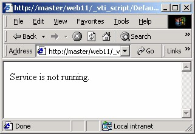
Gambar 11.11 Service belum aktif
Untuk mengatasi hal seperti ini, caranya adalah dengan mengaktifkan Indexing
Services. Langkah yang diperlukan adalah:
1. Aktifkan Control Panel. Gambar 11.12.
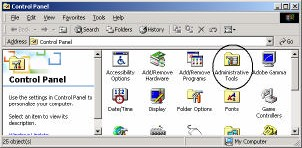
Gambar 11.12 Tampilan Control Panel
2. Klik ganda icon Administrative Tools , muncul tampilan seperti Gambar 11.13.
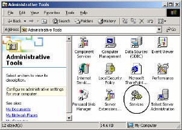
Gambar 11.13 Tampilan Administrative Tools
3. Klik ganda icon Services, muncul tampilan Services. Gambar 11.14.
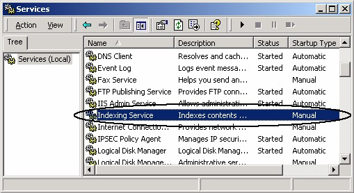
Gambar 11.14 Tampilan Services
4. Tampilkan icon Indexing Service. Gunakan scroll vertikal di sebelah kanan
tampilan tersebut.
5. Setelah menemukan icon Indexing Service, klik ganda icon tersebut. Muncul
kotak dialog Indexing Service Properties.
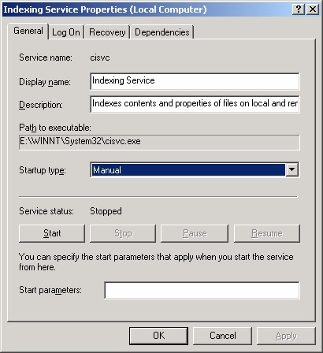
Gambar 11.15 Kotak dialog Indexing Service Properties
6. Klik tombol Start , proses aktifasi akan dijalankan dan hasilnya seperti Gambar
sebelah kanan. Perhatikan bahwa sekarang tombol Start tidak lagi bisa
digunakan, yang menandakan bahwa service sudah aktif.
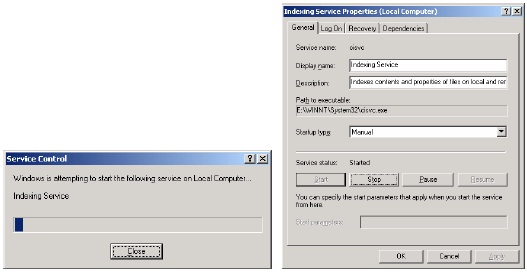
Gambar 11.16 Proses aktifasi service dan hasilnya
7. Selanjutnya Anda bisa menentukan jenis start-up pada kotak pilihan Startup
type .
8. Klik OK. Kemudian Anda bisa memeriksa hasilnya pada tampilan Services
yang kini menampilkan kata Started pada kolom Status .
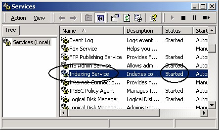
Gambar 11.17 Indexing Service sudah aktif
Jalankan lagi sarana pencari Anda, kali ini pasti akan berhasil, sebab Indexing
Service sudah diaktifkan.
1.6 Template Sarana pencari
Selain memasang secara manual ke halaman, kita juga bisa menggunakan sebuah
template halaman pencari yang disediakan FrontPage XP. Cara pemakaiannya:
1. Aktifkan File è New è Page or Web, task pane aktif.
2. Klik Page Template . Muncul kotak dialog Page Template.
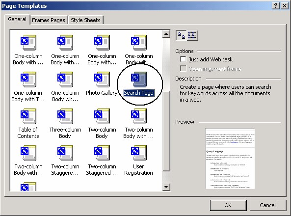
Gambar 11.18 kotak dialog Page Template
3. Klik ganda icon Search Page. Terbentuk sebuah halaman yang mengandung
sebuah sarana pencari. Gambar 11.19.
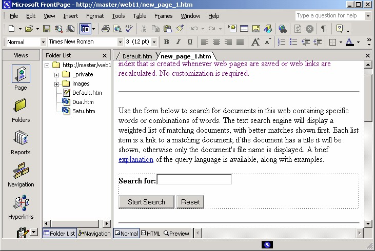
Gambar 11.19 Halaman pencari hasil template
4. Simpanlah halaman tersebut.
5. Anda bisa mengedit halaman yang mengandung sebuah sarana pencari dan
banyak komentar tersebut.
6. Selanjutnya, Anda bisa menggunakannya seperti telah kita bahas sebelumnya.
Copyright © Herlan Lesmana
Created with the Freeware Edition of HelpNDoc: Free HTML Help documentation generator